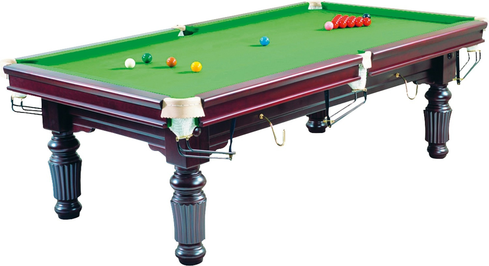
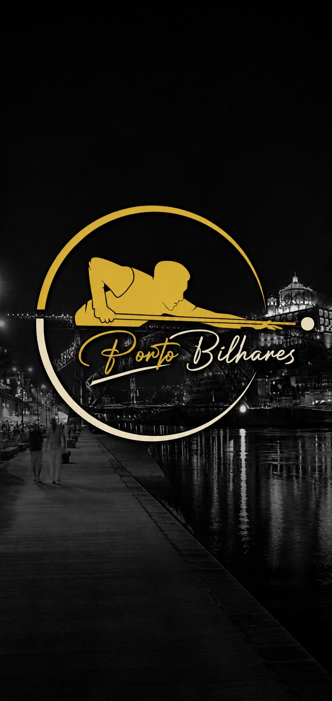
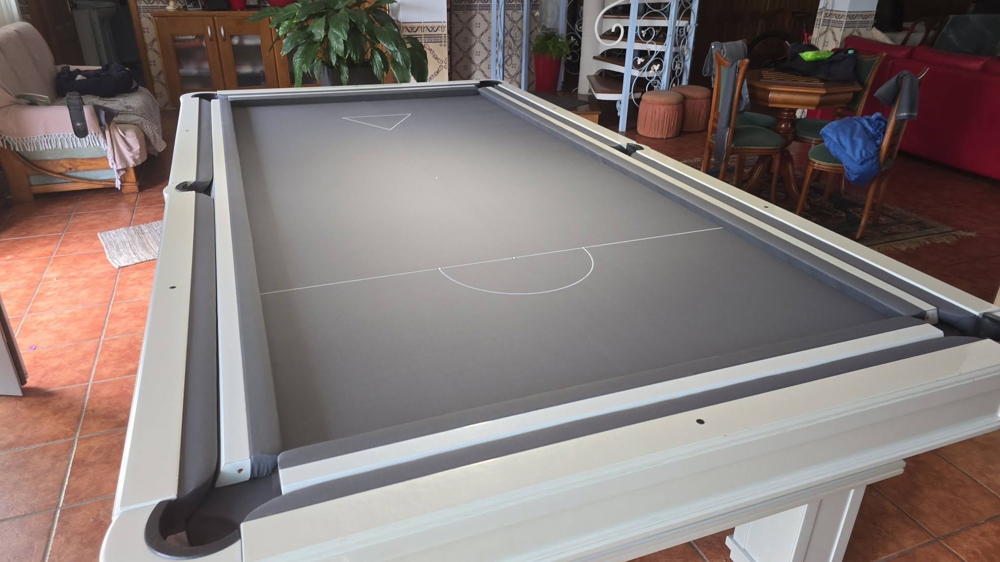
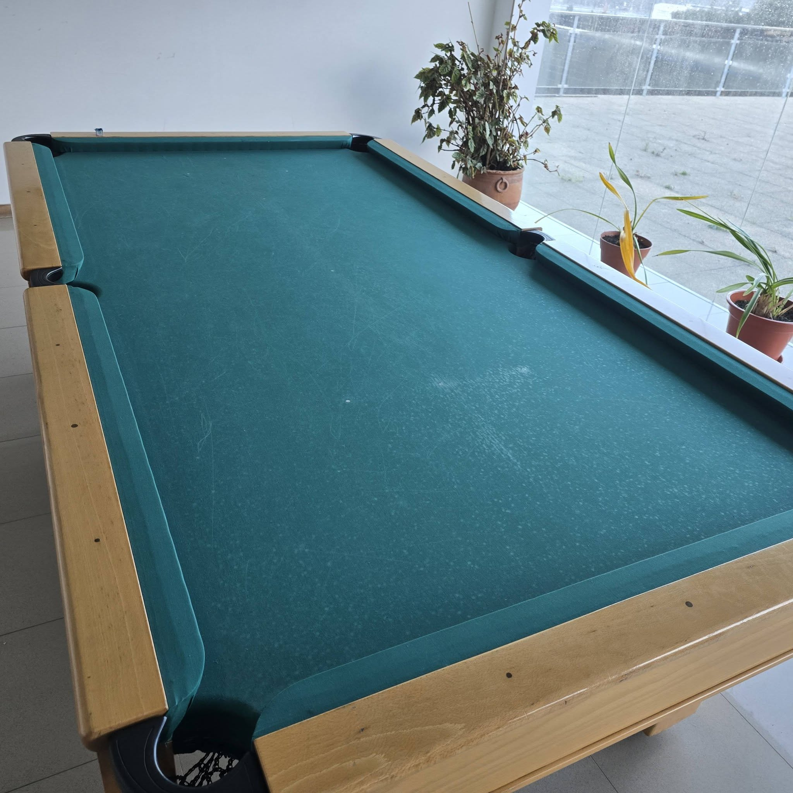
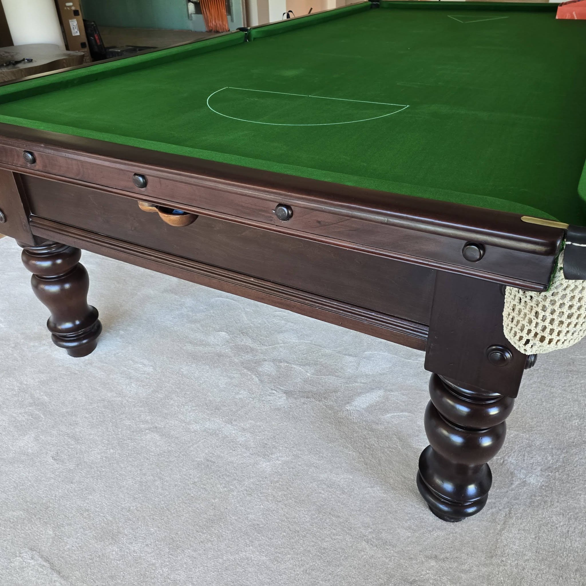
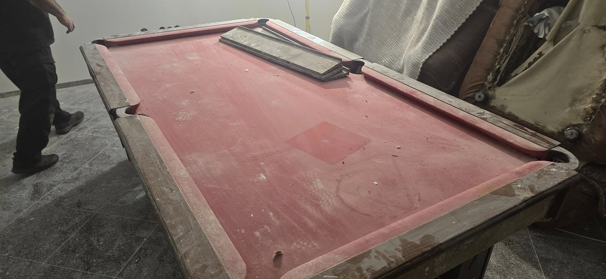
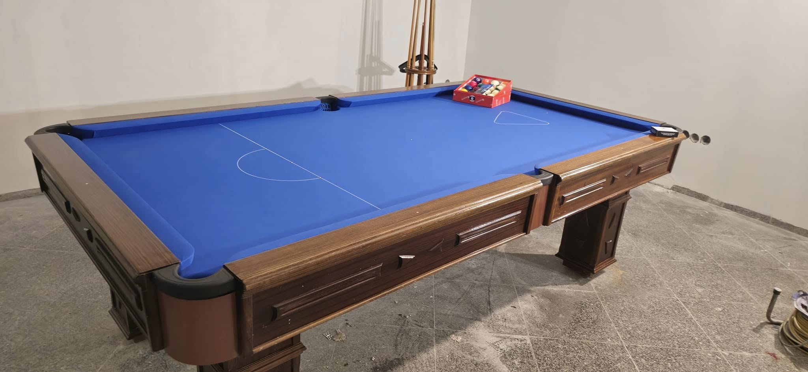
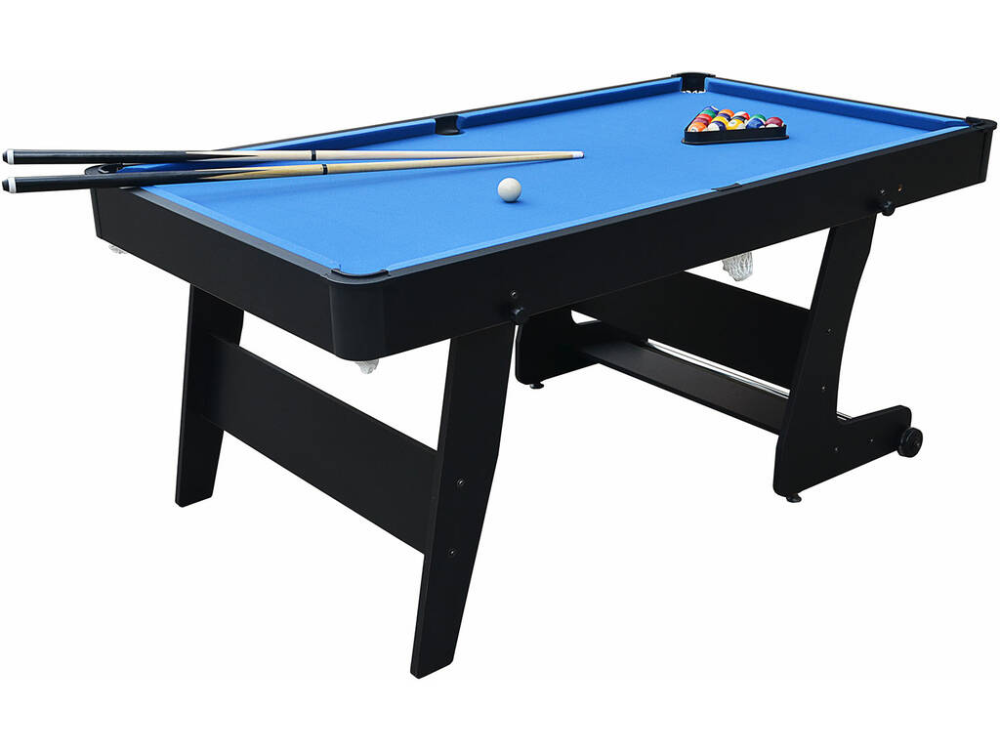
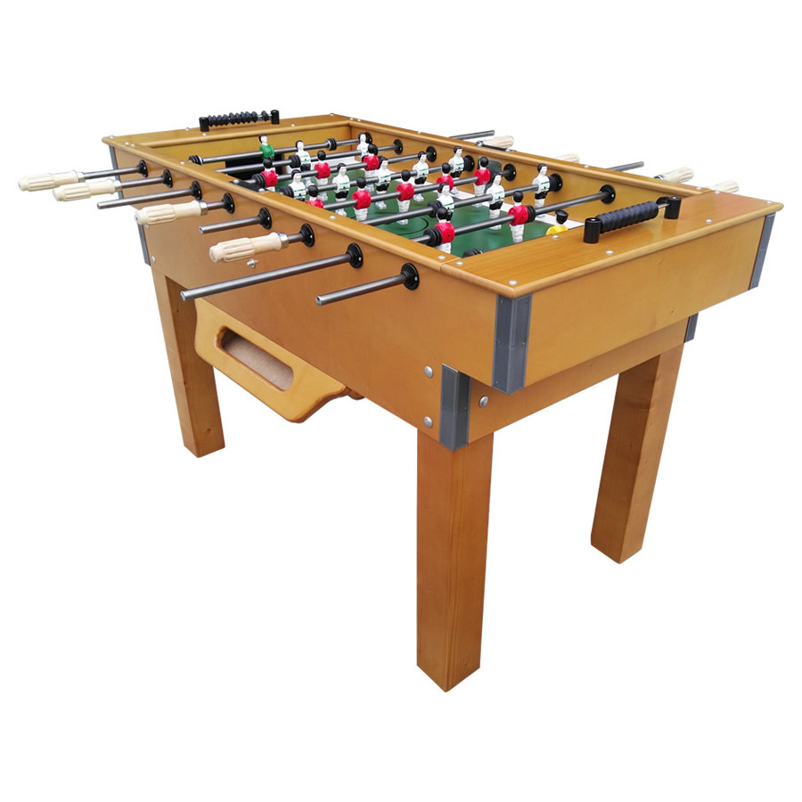
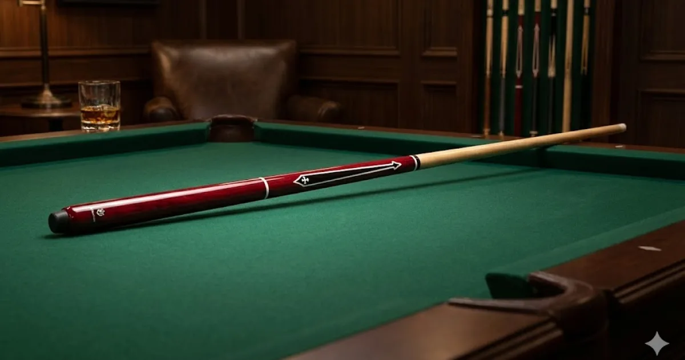

Novo

Meio século de experiência, um novo rosto desde 2009. Venda, instalação e assistência técnica de bilhares, matraquilhos (matrecos) e jogos em geral, no Porto e em todo o Norte de Portugal.
Sobre Nós
Fundada em 2009, a Portobilhares nasceu da paixão e do conhecimento acumulado de décadas no sector. A nossa equipa de profissionais com mais de 40 anos no mercado garante serviço de excelência tanto na venda como na manutenção e reparação de equipamentos.
Com sede em Paranhos, Porto, servimos particulares, bares, cafés, clubes e instituições em todo o Norte de Portugal.
Ver Todos os ServiçosTrabalhos Realizados
Exemplos reais de restauros e substituições de pano feitos pela nossa equipa. Arraste o cursor sobre cada imagem para comparar.








Produtos em Destaque




Assistência Técnica
Mais de 40 anos de experiência em reparação, manutenção e instalação. Cobrimos todo o Norte de Portugal.
Para Estabelecimentos
Oferecemos instalação de bilhares e matraquilhos em regime de comissão para bares, cafés, clubes e espaços de entretenimento em todo o Porto e Norte de Portugal.
Sem investimento inicial — a mesa é instalada gratuitamente no seu espaço
Partilha de receitas — sistema de comissão justo, transparente e sem surpresas
Assistência técnica incluída — manutenção e reparação asseguradas pela Portobilhares
Mais clientes, mais receita — o bilhar atrai e retém clientes no seu estabelecimento
Contacte-nos
Peça um orçamento gratuito ou venha visitar a nossa loja. Estamos na Rua António Cândido, nº 39, Porto.